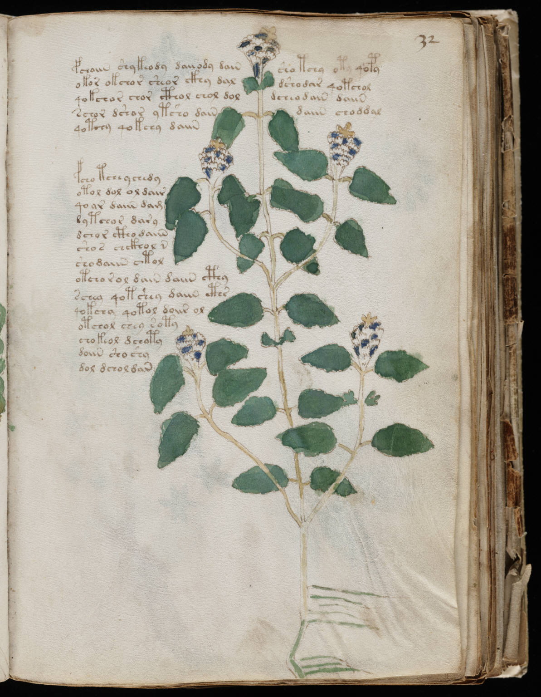

f32r
1fchoiin shykeody daiiody dainsho tchy oty qopy2okor okchor sheor ckhy daldshodar qotchol3qokchor chor cthol chol doldcheodain daiin4schor dshor ytsho daindaiin choddal5qotchy qokchy daiin6fcho tchey chedy7otol dol ol dair8qoar daiin dam9dytchor dary10dchor ctho daiin11shos chckhol n12shodaiin ctol13otcho r ol dain daiin cthy14schea qot shey daiin cths15qokchy qotol doiir ol16otchol chey soty17chokeol dchoty18doiin sho shy19dol dchol dan
